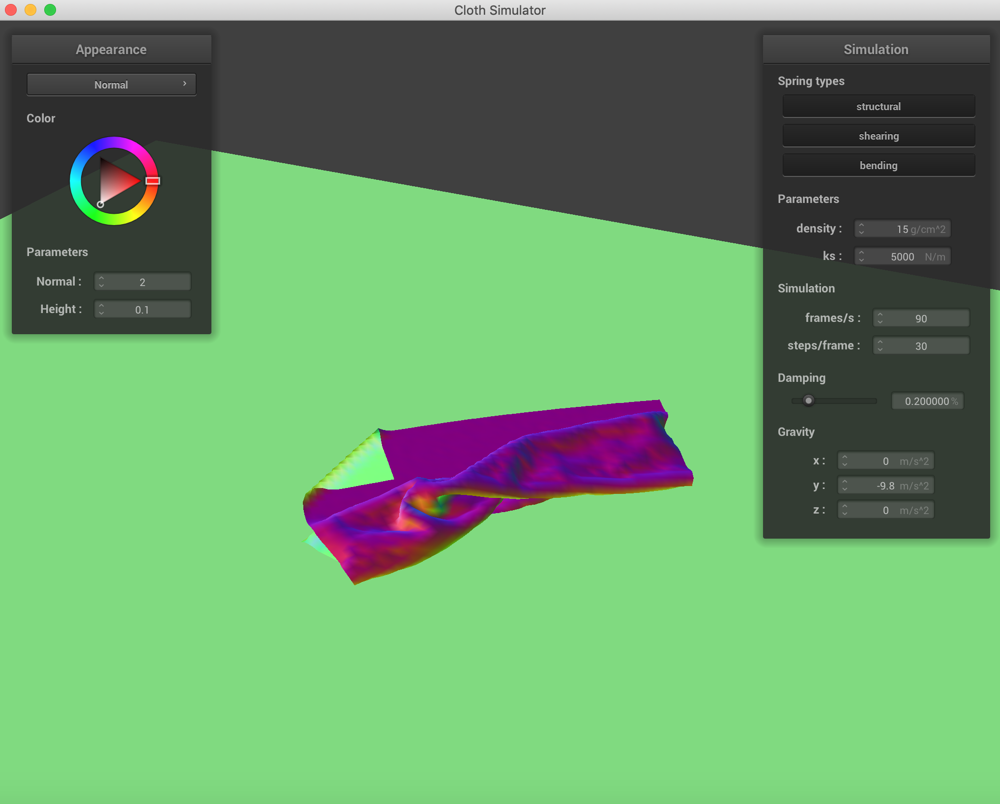
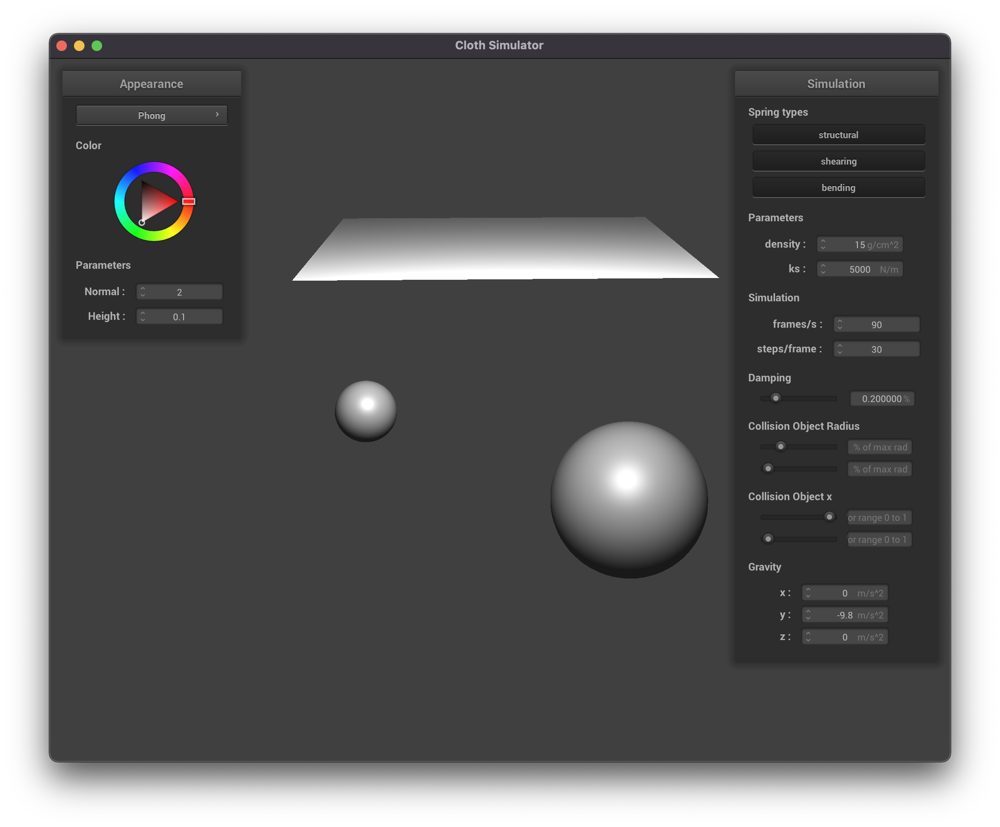
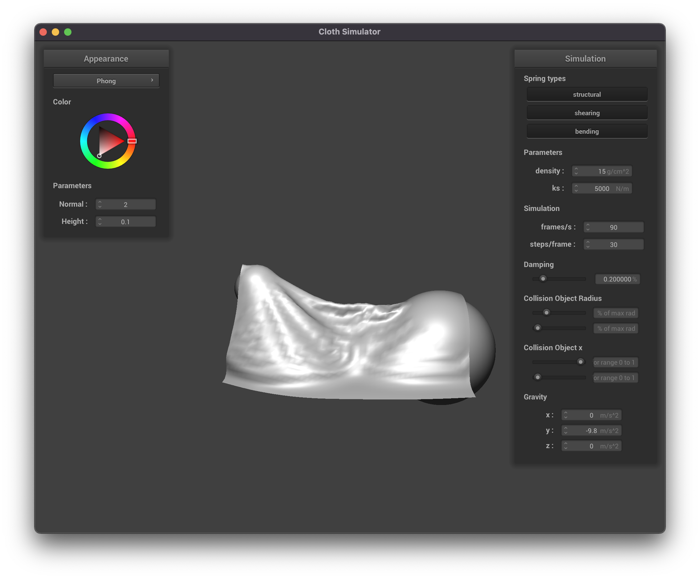

CS 184: Computer Graphics and Imaging, Spring 2022
Project 4: Cloth Simulator
Saagar Sanghavi, Rishi Parikh
Overview
In this project, we implemented the physics of simulating a piece of cloth falling on a sphere. We modelled the
cloth as lattice of point masses, connected by springs. We wrote out the differential equations that describe the
dynamics of the system and used Verlet integration to simulate how the objects would behave over time. Next, we
added handling for collisions with other (fixed) objects in the scene, like spheres and planes. We also added
handling for self-collisions (ie. when pieces of the cloth hit other parts of the cloth) using spatial hashing to
quickly lookup the positions of point masses. Finally, we implemented various shaders (Lambertian diffuse,
Blinn-Phong, Texture Mapping, Bump/Displacement mapping, and mirror reflection) using the GLSL language to allow
for different textures and light effects on the surface of the object.
Overall this was a fun project that allowed us to apply much of the theory we learned in this class
about physical simulation and turn these ideas into code. We specifically found the task of writing out all the
forces affecting each object and performing the integration to be interesting and challenging, and we spent quite
some time debugging this section and making sure we understood each step of the implementation. We also found the
handling of self-collisions to be challenging task since there were many edge cases we had to consider.
Part 1: Masses and springs
In this first part, we implemented a piece of cloth as an grid of point masses, connected by springs. The
structural constraints (ie. the cloth should hold together) were implemented by springs connecting adjacent
points. Shearing constraints (ie. the cloth should resist being pulled from opposite corners) were implemented by
springs connecting masses diagonal from one another. Finally, bending constraints were implemented by springs
connecting grid points to other points two units away. These constraints can be visualized in the images below.
Without any shearing constraints, we only see the structural and bending constraints that form the grid of the
cloth.
With only the shearing constraints, we see the diagonals of the former grid.
With all the constraints, we see both the grid and the diagonals.
 All Constraints
All Constraints
|
Part 2: Simulation via numerical integration
In this part we implemented the logic to calculate all the forces on each point-mass in the system. In our case,
this primarily concerned the spring forces and the force of gravity acting on all the masses. Using these forces on
each object, we could write out the differential equations that describe the behavior of the object's evolution over
time. We used Verlet integration to calculate numerical solutions for these differential equations as time
progresses. Finally, we implemented an additional constraint that a spring's length should not stretch by more than
10% of its rest length to avoid the cloth appearing to be too "stretchy".
The spring constant ks seems to affect how "loose" or flexible the piece of cloth is. A higher spring constant
would mean the cloth is more firm, thus stays tighter as the simulation plays but also oscillates more and is more
jittery before coming to rest. A lower spring constant on the other hand means the cloth is more flexible and is
more "droopy". The images below show the rest state for different values of ks. Note that for low ks the cloth is
more "droopy" while for high ks it stays firm.
The density affects how "heavy" the cloth is, since it affects the weight at each point mass. Keeping the spring
constants the same, heavier pointmasses would further extend the springs compared to lighter point-masses. Thus a
more dense material droops more than the less dense one.
Contrary to what we expected, regardless of the density the speed at which the cloth falls seems to be roughly the
same. However, this makes sense as the acceleration due to gravity is the same regardless of the mass (as Galileo
would have you know). The did did have a slight effect on how much it oscillated though (the heavier cloth did tend
to oscillate more, especially along the top edge between the two points that were pinned.
|
Density = 1 g/cc
|
Density = 10000 g/cc
|
The damping had a clear effect on how much the cloth would oscillate, and only on the time it would take to
settle. It had virtually no effect on the final resting state of the cloth (unless the damping was 0, in which case
it would never settle and oscillate continuously). High damping would lead to the cloth settling down without
oscillating (and appearing to move very slowly) while low damping would lead to more oscillation and wild, jittery
behavior of the cloth. Note that the there was a "critically damped" amount of time where it settled in the least
amount of time. For damping below this critical damping, the cloth would take more time to settle since it would
jitter around too much. For damping above this critical damping, the cloth would move too slowly (ie. wouldn't react
enough to the spring forces) and it would thus also end up taking longer to settle.
|
Oscilatory behavior due to no damping
|
Settled behavior with damping = 1
|
The screenshot below shows the cloth with all 4 corners pinned in its resting state.
Part 3: Collisions with other objects
In this part of the project, we implemented collisions with other simple objects like spheres and planes. To do this,
we check if the particles in the cloth collide with another object and if so, we update the positions of the particles
to remain outside the boundary of the object.
Beow are some pictures of the resting state of the cloth on a sphere for different values of the spring constant ks.
 ks = 500
ks = 500
|
ks = 5000
|
ks = 50000
|
Notice that a stiffer springs (higher ks) leads to a "stiffer" fabric that folds in less places, while a smaller
spring constant leads to a more "soft" fabric that has many more finer folds as it falls on the sphere. This makes
sense intuitively, as the stiffer springs will be more resistant to bending.
We also implemented collisions with flat planes. Below is a picture of our textured cloth lying on a plane.
Part 4: Handling self-collisions
While the collision handling in the previous part took care of the cloth interacting with other objects, it did not
consider the cloth folding in on itself. In this part, we implemented self-collisions so that the cloth would not
pass through itself when it folded onto itself. Rather than naively have a nested loop over all pairs of point
masses, we used spatial hashing so that we can easily lookup if a point mass of the fabric is in collision with
another point on the fabric.
Below are some screenshots of the cloth falling and folding on itself.
|
Initial
|
Falling
|

Final resting state
|
We can vary the density and observe its effect on how the cloth behaves.
|
density = 1 g/cc
|
density = 500 g/cc
|
While the less dense cloth falls lightly and curls on itself more gracefully, the denser cloth is more "crunched up"
on itself as it falls.
We can also vary the spring constants and see their effect.
A higher spring constant leads to less bending, while a lower spring constant means the cloth bends more and has more
self-collisions.
Part 5: Shaders
A shader is a highly optimized program that runs in parallel and helps speed up parts of the graphics pipeline.
There are two types of shaders: vertex and fragment shaders. Vertex shaders transform the object vertices and can
modify their position, normal, and other geometric properties before writing the final position. Fragment shaders
process fragments of a scene (recall a fragment is all the geometric information necessary to draw a single pixel)
and write a single color corresponding to what the pixel value should be. Vertex shaders calculate all the necessary
information for vertices in a 3D mesh, and then we can use barycentric coordinates to interpolate across the
surfaces. Afterwards, fragment shaders calculate the actual pixel values and apply the visual surface effects (like
shading and material effects) using the information from the vertex shaders.
Blinn-Phong is a simple shading model that aims to make realistic-looking reflections. Specifically, the shading
value for each point involves an ambient component, diffuse component, and specular component. In our implementation
of this part we found referring to the project 2 code to be helpful. The ambient component
corresponds to effects from ambient light in the scene. The diffuse component corresponds to reflected light that is
scattered equally in all directions from a surface (like Lambertian diffuse). The specular component corresponds to
the "glinty" reflections from light sources in the scene.
Below, we see the effects of the three components of Phong shading and the final result of combining them.
 Ambient Component
Ambient Component
|
Diffuse Component
|
 Specular Component
Specular Component
|
 Final Result of Phong Shading
Final Result of Phong Shading
|
We also implemented texture mapping. This involved a fairly straightforward set of function calls. Below we see our
custom texture (picture of a basketball) mapped onto a flat piece of cloth.
We also implemented bump mapping and displacement mapping. Bump mapping involves assigning a height-level
(topography) for each point on a
surface, and adjusting the shading effects accordingly without actually changing the locations of the vertices. Bump
mapping thus only requires making changes to the fragment shader. Displacement mapping is similar to bup mapping but
actually moves the vertices based on the height, and thus requires making changes to the vertex shader, too.
Below are some images using bump and displacement mapping on the sphere and cloth in the scene. We used Texture 4.
 Bump Mapping, coarse (resolution = 16)
Bump Mapping, coarse (resolution = 16)
|
 Bump Mapping, coarse (resolution = 16)
Bump Mapping, coarse (resolution = 16)
|
 Bump Mapping, fine (resolution = 128)
Bump Mapping, fine (resolution = 128)
|
Bump Mapping, fine (resolution = 128)
|
 Displacement Mapping, coarse (resolution = 16)
Displacement Mapping, coarse (resolution = 16)
|
 Displacement Mapping, coarse (resolution = 16)
Displacement Mapping, coarse (resolution = 16)
|
 Displacement Mapping, fine (resolution = 128)
Displacement Mapping, fine (resolution = 128)
|
Displacement Mapping, fine (resolution = 128)
|
Bump mapping seems to affect the appearance, but not the behavior of the objects in the scene. This makes sense as
it only affects the pixel values seen, not the underlying geometry. Displacement mapping on the other hand seems to
have more of an effect on the physics and actually moves the vertices according to the height map.
The coarseness of the sphere had a very slight effect on the appearance—notice that the coarse sphere is not as
round. Otherwise there were no real differences.
We also implemented a mirror shader, which reflects the surrounding environment.
|
Mirror Shader
|
Mirror Shader
|
Part 6: Extra Credit
The extra credit code can
be found here!
For the extra credit, we wanted to model the relationship of a cloth interacting
with multiple objects at once. To do this, we wanted to model how a cloth would
behave when falling between two spheres. In doing this, we quickly became curious
about what happens when you change the size and location of the spheres.
Here we see a scene with two balls that can each be moved in the x, y, z direction and change in size
The first step was to modify the skeleton code to accept multiple inputs via the JSON.
The sphere collision JSON representation is now a list. We iterate through this
list to create multiple spheres in our scene. This part was not very conceptually
challenging, but took some time to figure out the pointer manipulation and interacting with
the JSON. We can now initialize any number of objects in the scene simply by
changing our json input file.
Here we see a screenshot representing the three stages of cloth falling
and interacting with objects in the scene. Overall this followed as we
expected, as we saw the middle droop down first, and the sides follow.
|

|

|
|
The next step was to move collision objects. To do this, we modifying the interface
to add sliders for each collision object in the scene. These sliders allow us to
get inputs for different parameters such as sphere radius or x and y locations.
By modifying these, we can change our scene in real time. In order to change the
parameters of each of the collision objects, we created instance methods that
allow us to change the radius and position of each sphere in the scene. This change
can happen before the simulation starts, or even while the simulation is running.
This feature allows us to run some cool interations between objects. A few interesting
phenomena that I noticed were: Increasing the size of the sphere when a cloth
was already resting on top of said sphere, moving a sphere left and right when an object
hits it and more. A few examples of cool scenes that we were able to produce have been
added below. Since we wanted to allow for an arbitary number of objects, we made all
of this code work for a vector and not a set size. For this part of the project, we wanted to focus on modifying
spheres, but this implementation can easily be modified to move planes as well.
Cool examples
A cool bug that happens when you enlargen the size of the sphere after the ball is
resting on the sphere.
|
|
|
We can also decrease the size of said sphere! This follows much closer to what we expected.
|
|
|
Some challenges we had included accessing and modifying values of the sphere object.
Since we stored a list of collision objects, we were unable to cast from a collision
object to a sphere.